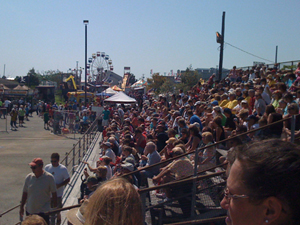
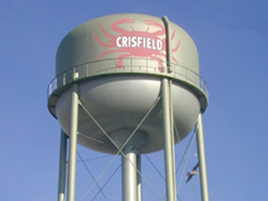

National Hard Crab Derby
Labor Day Weekend Aug. 29, 30, 31, 2014
Crab Derby
by Mindie Burgoyne
The highlight of the race is The Governor's Cup Race, named for Crisfield's native son, Governor J. Millard Tawes, who served as Maryland's Governor from 1959 to 1967.
 The weekend-long celebration that brings in an estimated 8,000 visitors, has some preliminary events on Thursday evening with the crowning of Miss Crustacean at the Crisfield High School. Thursday is also "wristband night," which allows free entry for the amusement rides. Friday begins with a Crab Cooking Contest, and the festival grounds at Somers Cove Marina open at 6 p. m. with games, rides, food, craft vendors and live entertainment. Besides the National Hard Crab Derby Races on Saturday, events include the street parade at 11 a.m., Crab Picking Contest, amusements, rides and an evening concert.
Sunday's main event is the Boat Docking Contest ($15 admission), also known as the Watermen's NASCAR event, where skilled captains ply their docking skills to compete for purses worth $30,000. The weekend festivities conclude Sunday evening with live entertainment and a stellar fireworks show at 9 p.m
Other activities around town include the J. Millard Tawes Historical Museum, a general history museum of the area including maritime artifacts, and collections that relate to the history of the City of Crisfield and the life of Maryland watermen. Charter fishing boat trips are available, as are excursions to Smith and Tangier Islands.
 The City of Crisfield, with a population of about 2,700, is synonymous with the Blue crab. Self proclaimed as the "Crab Capital of the World," the city has the crab symbol emblazoned on its water towers, street signs, newspaper, town website and even on the Crisfield Police patch (along with a fish and oyster). For more than 300 years, Crisfield has been a waterman's town and the Blue crab a symbol of prosperity. Even today, the city's dependence on the Bay's bounty is evident in the waterfront seafood processing plants, seafood distributors, seafood restaurants and work boats that leave Crisfield harbor six days a week.
Mindie Burgoyne is an author, travel writer and tour guide living on the Eastern Shore of Maryland. Her blog The Travel Hag shares information on outdoor travel for women. She is the author of Haunted Eastern Shore; Ghostly Tales from East of the Chesapeake.